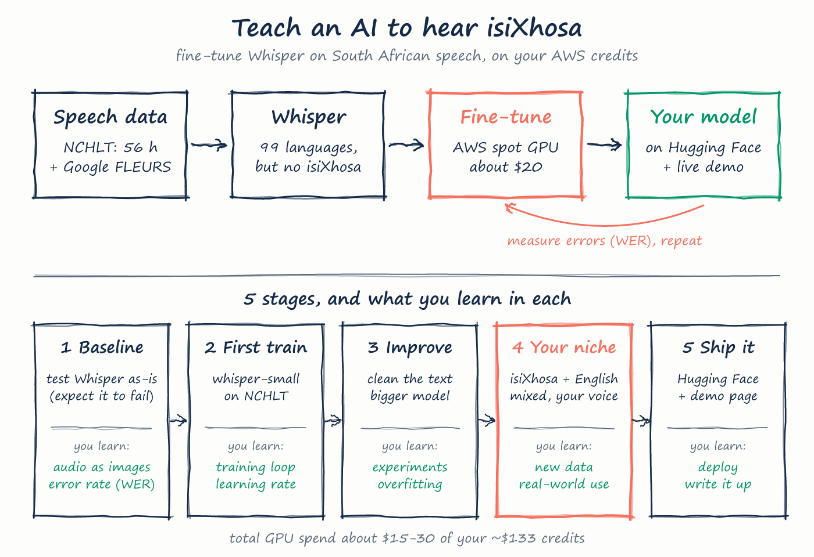
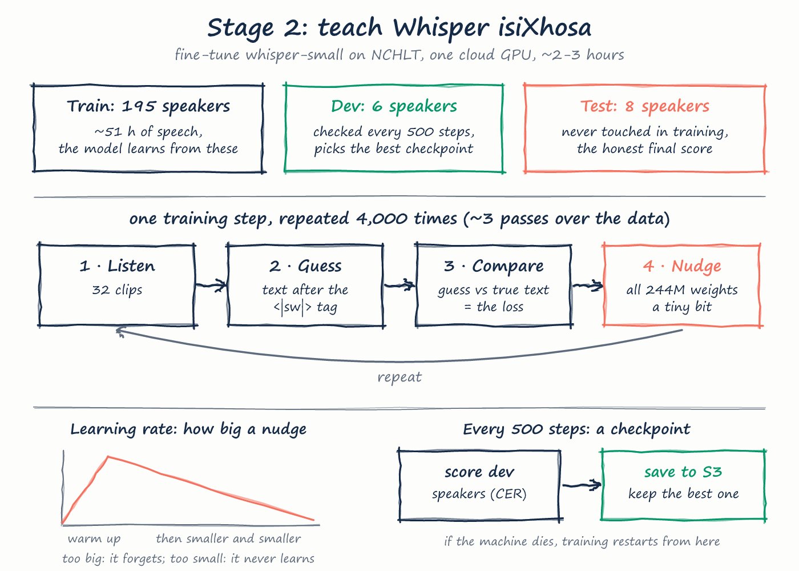

Whisper is a free speech-to-text model from OpenAI that understands 99 languages, but not isiXhosa. We are teaching it isiXhosa using 56 hours of recorded speech, on a computer rented from Amazon by the hour. You make the decisions; Claude Code agents write and run everything. This page is the story so far, in plain words.
Stage 3 is going well. Adding 13 hours of natural speech (FLEURS) fixed long sentences: 30% → 10% letter errors. Then the bigger whisper-medium model, trained on exactly the same data, improved every score again: 8.0% letter errors and 38% word errors on long sentences it has never seen, and 2.3% letter errors on the NCHLT exam.
Results: evidence/R-0012-stage3-medium-results.html. Best model so far: models/R-0012/ in our cloud storage. All machines are off.
Your choice next: stage 4 (your own mixed isiXhosa and English recordings, which targets the biggest remaining weakness) or stage 5 (publish R-0012).

Spec, roadmap drawing, and a record-keeping system: every run, problem and decision is written down as it happens, so the final write-up can point to real evidence.
You speak isiXhosa, so stage 4 can use your own voice and you can judge the model's mistakes by ear. You chose to keep the data in the cloud, not on your laptop, and accepted the NCHLT data licence (free to use if we credit its creators).
Two small temporary computers fetched the two datasets into private Amazon storage in about 15 minutes, then switched themselves off: NCHLT (56 hours, about 200 speakers) and Google FLEURS (extra isiXhosa). Every file has a fingerprint (checksum) to prove it arrived intact.
It got about 3 of every 4 letters wrong, guessed 52 different languages, and wrote 30% of its answers in the wrong alphabet. But it often heard the sounds roughly right; it just can't spell isiXhosa.
Borrow Swahili's "language label" for isiXhosa (Whisper has none), and use regular, never-interrupted GPU computers.
The small rehearsal run stopped at the first training step because one library was not installed. Cost about $0.11. Fixed, and a 2-minute safety test now runs first, so mistakes like this get caught early and cheaply.
Trained 40 tiny steps, stopped, restarted from the saved copy, scored itself. Measured speed: 1.65 seconds per step, which is how we priced the real run. Even 40 steps cut letter errors on one speaker from 60% to 17%.
Plain Whisper, just told "this is Swahili", stopped guessing languages and writing in the wrong alphabet. But it still spelled isiXhosa like Swahili: almost never kh, th or the clicks.
A check every 500 steps on 6 held-out speakers: 7.0% → 6.3% → 4.5% → 4.1% → 3.7% → 3.6% → 3.6% → 3.5% wrong letters. It levelled off after step 3,000, an early sign of memorising. The progress lines got stuck in a buffer (P-0006), so we watched the saved checkpoints instead.
64.5% of clips exactly right. Sentences it had practised: 2.2%. Sentences it never saw: 6.2%. Clicks and kh, th, hl, dl are now written correctly 94–99% of the time.
At your suggestion, a separate AI agent reviewed the code cold. No crashes, but it caught two things that would have made the comparison unfair. Both fixed before launch.
On FLEURS, 1,034 long natural sentences it had never seen, the stage 2 model scored 30% letter errors and 95% word errors. It glued words together, because it had only ever heard 3-word prompts.
Same recipe, one change: 13 hours of FLEURS added to the 51 hours of NCHLT.
Word errors on new sentences fell from 95% to 44%, and the model now writes the right number of words. NCHLT stayed at 2.9%. English words inside isiXhosa are now the main weakness, which is what stage 4 targets.
whisper-medium: three times the size of the model so far. Same data, same recipe, so any change in score comes from size alone.
The bigger model didn't fit on our usual GPU except in a very slow mode (P-0007), so you chose a bigger GPU with twice the memory. Even that ran out of memory at first (P-0008). The third test tried both remaining set-ups and found one that fits: 8 clips at a time, 4 times per step. About $1 for all three.
Amazon had no free machine of that type at first (P-0009); a retry got one a few minutes later. Plain whisper-medium scored 46% letter errors on FLEURS before any training. Then 4,000 training steps, ahead of the small model at every check.
Word errors on new sentences fell from 44% to 38%; NCHLT letter errors from 2.9% to 2.3%. 698 of 1,034 long sentences got better, 233 got worse. Training ran faster than the test suggested, so it cost about $4.30 instead of $7.
Two scores, both "lower is better". CER counts wrong letters, WER counts wrong words. For isiXhosa, CER is the fairer one: words are long, so a single wrong letter makes the whole word count as wrong.
| Run | What | Letters wrong (CER) | Words wrong (WER) |
|---|---|---|---|
| R-0001 | Plain Whisper, guessing the language itself. All 2,770 test clips. | 75.1% | 196.6% |
| R-0002 | Rehearsal only: 40 tiny training steps, one speaker, 300 clips. Not a real result. | 16.8% | 77.5% |
| R-0003 | Plain Whisper told "this is Swahili". No training. | 45.7% | 164.5% |
| R-0004 | Whisper trained on 51 hours of isiXhosa. All 2,770 test clips. | 3.0% | 16.6% |
| R-0004 | … only the 511 clips whose sentence never appeared in training (the honest number). | 6.2% | 36.6% |
| R-0005 | The same model on FLEURS: 1,034 long natural sentences, all new to it. | 29.8% | 94.9% |
| R-0007 | Trained on NCHLT + FLEURS. FLEURS exam. | 10.2% | 44.4% |
| R-0007 | … and on the NCHLT exam (no loss). | 2.9% | 16.8% |
| R-0011 | Plain whisper-medium told "this is Swahili". No training. FLEURS exam. | 45.9% | 142.3% |
| R-0012 | whisper-medium trained on the same data as R-0007. FLEURS exam. | 8.0% | 37.8% |
| R-0012 | … and on the NCHLT exam. | 2.3% | 12.7% |
| R-0012 | … only the NCHLT sentences never seen in training. | 5.0% | 28.7% |
Why can WER go above 100%? Whisper chops long isiXhosa words into pieces, and every extra piece counts as one more error.

whisper-medium needs.A 15-minute download said nothing until it finished. Now every long job reports progress.
Long cloud jobs must report on themselves.
Fixed: agents can now run checks on a running machine without opening it to the internet.
Decide how you'll get inside before you need to.
Amazon's cheap "spot" computers were all taken, so we used a regular one.
Cheap capacity isn't guaranteed.
An invisible line-ending character made files look missing. Fixed in the script.
Windows and Linux tools disagree about invisible characters.
The rehearsal caught it before the expensive run. A 2-minute safety test now runs first.
The cheapest place to find a bug is the smallest run.
A text filter held the progress lines back, so we couldn't see the step counter. We watched the saved checkpoints instead; fixed for next time.
Check that progress is visible in the first minute.
whisper-medium only fit the 24 GB GPU in a slow mode (~10 hours). We moved to a 48 GB GPU.
Model memory grows with size before any data is added.
The test tried only one set-up, so one "no" ended it. The next test tried every option and kept the one that fit.
A test that asks "which set-up?" should try them all.
All big GPUs of that type were taken for a few minutes. We retried the same type rather than switching to one that would change the cost.
Retry before changing the plan.
The comparison tool showed 2 runs instead of 4 because their folders had the same name. Caught and fixed before any number was written down.
If a report has fewer rows than expected, stop and check.
Data, stage 1, rehearsals, two small-model runs (~$1.85, ~$1.97), three memory tests (~$1) and the medium run (~$4.34).
Everything switched itself off. Storage costs about $0.25 a month.
Out of about $133 of AWS credits. The monthly GPU safety brake ($20) will sit near $17 for October once billing catches up.
Your choice. Stage 4: record your own mixed isiXhosa and English sentences, which targets the biggest remaining weakness (English words and names inside isiXhosa). Stage 5: publish R-0012 on Hugging Face with an honest model card and a free demo. Or more stage 3: a real isiXhosa tag, more FLEURS weight, or a comparison with Meta's MMS model.
Still open for you: listen to a few clips in data/listen/R-0001/ and tell me if the problem sounds like spelling or word boundaries. A Hugging Face account is only needed at stage 5.